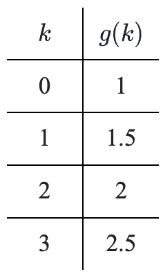

Erin drove from Green Bay to Milwaukee. For the first half hour she drove through a residential neighborhood traveling at a constant speed of \(25\) miles per hour. As she entered the on-ramp to the freeway, she encountered heavy traffic. She was able to gradually increase her speed at a constant rate as the traffic slowly dissipated, until she reached a speed of \(75\) miles per hour, a quarter of an hour later. She continued at that speed until she got to her destination after a total of \(2\) hours of driving. Assume she made no stops along the way.
Sketch a neat and accurate graph of the situation, being sure to label and scale your axes. Shade in the area between the curve and the positive \(x\)-axis.
What are the units when calculating the area of the shaded region? Use unit analysis to justify your answer.
Calculate the area of the shaded region from \(0\le x\le2\). What does this area represent?
What does the area from \(0.5\le x\le0.75\) represent in the context of the problem?
Lew walks every day at lunch when he is working. The amazing thing about Lew is that he walks at a constant rate (velocity) the entire time he walks. He walks for \(1\) hour every day and travels at a rate of \(4\) miles per hour.
Sketch a velocity graph of Lew’s lunchtime walk, being sure to label both axes. Shade the area between the curve and the \(x\)-axis over the appropriate domain.
What are the domain and the range of this function?
The region that is shaded on your graph should resemble a rectangle. What are the units when calculating the area of the shaded region? Use unit analysis to justify your answer.
What is the area of the shaded region? Include the proper units.
Solve the system of equations:
\(x^2-2y=-3\)
\(x^2+y=6\)
Suppose \(f\left(g\left(x\right)\right)=\frac{1}{x+7}\). Write a possible set of equations for functions \(f\) and \(g\). (Note: \(f(x)\ne g(x)\ne x\))
Simplify each of the following expressions.
\(\left(1+\frac{x}{y}\right)\left(\frac{4y^2}{x^2-y^2}\right)\)
\(\large \frac { x ^ { 2 } - 6 x + 8 } { x ^ { 2 } - 16 } \div \frac { x ^ { 2 } - 4 x + 4 } { x + 4 }\)
\(\left( \frac { x ^ { - 2 } + x ^ { - 1 } } { x + x ^ { - 3 } } \right) ^ { - 1 }\)
Use the functions shown to write an equation for \(f(g(k))\).
\(f(x)=wx^2\)

What is the difference between the values of each of the following pairs of sigma expressions? Expand each one to find out.
\(\displaystyle \sum _ { j = 3 } ^ { 7 } j ^ { 2 }\) and \(\displaystyle \sum _ { k = 3 } ^ { 7 } k ^ { 2 }\)
\(\displaystyle \sum _ { j = 3 } ^ { 7 } j ^ { 2 }\) and \(\displaystyle \sum _ { j = 4 } ^ { 8 } ( j - 1 ) ^ { 2 }\)
If Arnold invests \(\$6500\) at \(4\%\) per year, how much additional money must he invest at \(10\%\) to ensure that the interest he receives each year is \(8\%\) of the total invested?
Simplify: \(\sin^2(4x+2)+\)\(\cos^2(4x+2)\)